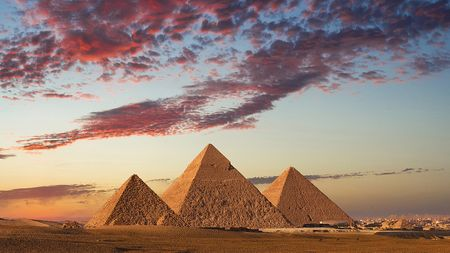
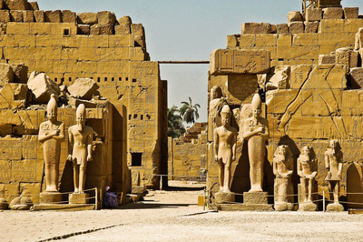
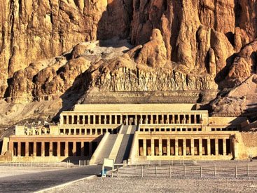
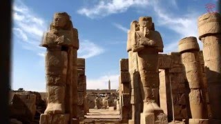

Пирамиды Гизы

Пирамиды являются визитной карточкой Египта, и наиболее загадочными строениями на Земле. Уже много лет учёные спорят об их назначении. Одни считают, что это обычные усыпальницы царей Древнего Египта, другие придерживаются точки зрения, что строительство пирамид связано с инопланетными цивилизациями. Сложно представить, как возвести сооружения подобных габаритов во времена, когда не было строительной техники и инструментов для обработки камня.Три самые известные пирамиды правильной формы: Хеопса, Хефрена и Микерида. Они построены из известняка, и какое-то время были облицованы каменными плитами. Их построили в XXVI столетии до нашей эры, во времена правления четвёртой династии фараонов.
Луксорский храм

Глядя на Луксорский храм, трудно даже представить себе, что древние египтяне построили его более 3400 лет назад. Это было настолько давно, что весь комплекс со временем занесло песком, а над ним успели построить мечеть. Хотя ученые и археологи интересовались Египтом ещё со времен Возрождения, непосредственное изучение египетского наследия началось лишь в XIX веке. Именно тогда археологи буквально откопали Луксорский храм, чем произвели фурор в сфере египтологии.Храм посвящен верховному древнеегипетскому богу солнца — Амон-Ра, а на сохранившихся колоннах до сих пор можно увидеть сцены из его жизни. За такой длительный срок храм много раз перестраивался, а к уже существующему ансамблю добавлялись новые здания и комнаты. Тем не менее в Луксорском храме до сих пор остались архитектурные элементы, которым больше 3000 лет, и этот возраст вызывает неподдельный трепет перед величием древних египтян.
Долина царей

В шестнадцатом столетии до нашей эры для захоронения египетских правителей было создано место, в котором организовали много гробниц. Когда-то эта местность была тайной и тщательно охранялась надзирателями, что обороняли её от недоброжелателей.Обычай погребения правителей началось благодаря Тутмосу Первому, который боялся за ограбление личной гробницы и дал указ построить её в тайном и труднодоступном месте. Так возникла долина Царей — немаловажная достопримечательность Древнего Египта, что сохранила свой вид до сих пор.Сейчас в данной местности свыше шестидесяти правителей и их семьи. Внутри достопримечательности создана целая система сложных тоннелей и колодцев, а стены украшают фрески, которые повествуют о жизни тогдашних правителей.
Карнакский храм

Если возраст Луксорского храма вас не впечатлил, то знайте, что Карнакский построили плюс-минус в XX веке до нашей эры. Более того, это самый крупный храмовый комплекс Египта, посвященный Амон-Ра и его семье: сыну Хонсу и супруге Мут. Самым древним элементом строения считается «Белая капелла» — небольшое строение, которому уже больше 4000 лет.Каждый фараон стремился внести свою лепту во внешний вид, а последние весомые изменения произошли во время правления римлян — в конце I века н. э. Как это часто бывает, с приходом новой религии о старой пытаются забыть любыми методами, поэтому при императоре Константине I (306-337) комплекс забросили, а в некоторых помещениях оборудовали христианские святилища. Храм обнаружили в песках около 200 лет назад, но археологические работы ведутся до сих пор.